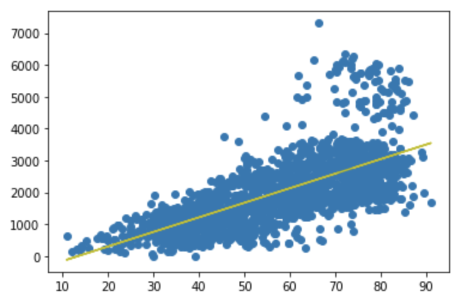
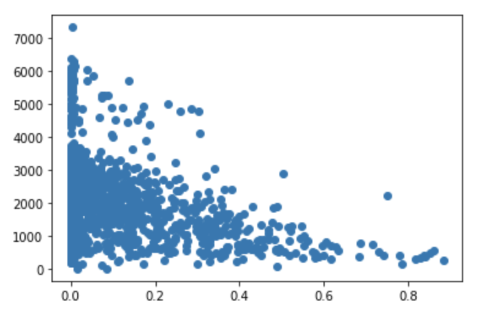
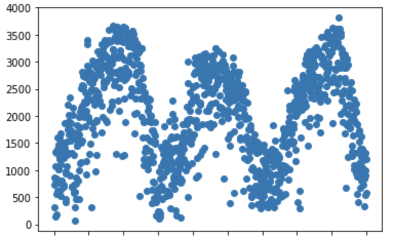
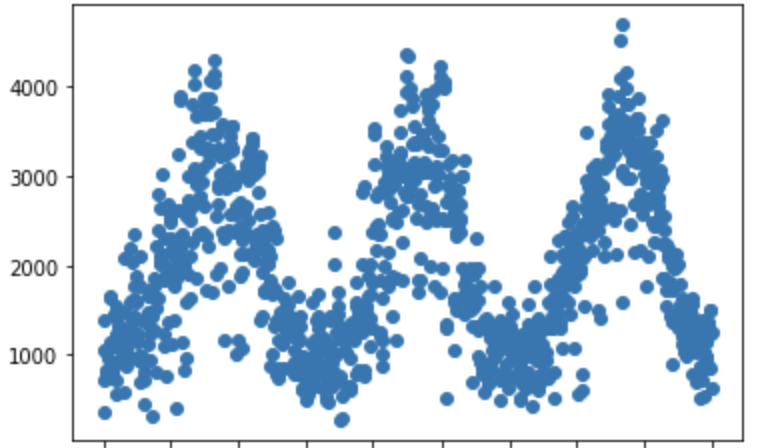

Any Philadelphia resident has undoubtedly passed the racks of blue bikes on the sides of various streets. These bike racks are operated by Philadelphia based ride sharing company, Indego, which actually has all of its ride data publicly available for download. Due to this ride info being readily available and how ubiquitous Indego is in Philadelphia, I decided to analyze trends in their rides, how they are impacted by weather and more. The data is very comprehensive spanning back to 2015, along with being mostly clean right out of the box. The numbers end up painting an informative picture of the company's dealings, so on that note, let's get to the numbers.
Below is the total number of rides by year, and what jumped out at me first was how much of an outlier 2016 was in terms of total rentals. There were no major differences in average weather for the year that could be pointed to as the cause. Whether this discrepancy was due to Indego being "the new cool thing" or it was due to something operational that could be duplicated, it's certainly worth further investigation by the company's decision makers.

Now we come to rides by month of the year, and even before taking weather data into account a clear seasonal correlation can be seen. This pattern alone could help predict daily rentals within a reasonable margin. Adjusting the number of bikes in circulation or the number of operational stations could be a good way to cut costs and take advantage of the lower volume in down seasons.

Next, if you simply look at the total distribution of rides by day you'll see that there is very little deviation amongst them, but this doesn't tell the whole story.
| Day of Week | Number of Rides |
|---|---|
| Monday | 502827 |
| Tuesday | 538356 |
| Wednesday | 550707 |
| Thursday | 530674 |
| Friday | 531637 |
| Saturday | 445003 |
| Sunday | 404415 |
Breaking down the daily ride distribution by pass type reveals a more interesting relationship. Daily passes have a much higher rental volume on weekends while subscription passes have a much greater amount of rides on weekdays. Below we have the total daily ride counts by day of the week for daily passes.
| Day of Week | Number of Rides |
|---|---|
| Monday | 18086 |
| Tuesday | 14983 |
| Wednesday | 15737 |
| Thursday | 16162 |
| Friday | 21530 |
| Saturday | 46543 |
| Sunday | 35663 |
And now we have the number of rides by day for subscription holders
| Day of Week | Number of Rides |
|---|---|
| Monday | 442132 |
| Tuesday | 484133 |
| Wednesday | 494060 |
| Thursday | 472532 |
| Friday | 455663 |
| Saturday | 306462 |
| Sunday | 282349 |
This makes logical sense considering people may use subscription services as their main form of transportation while daily passes may be used more for leisure on days off. This could potentially be capitalized on with promotions for daily passes on week days to hopefully draw in more customers on slower days or by utilizing other discount offers.
Initial weather EDA shows the only two weather conditions with an apparent correlation are temperature and chance of precipitation. For example, all days exceeding a total ride count of 5000 were when the temperature was warmer than 60 degrees. And the trend for precipitation chance is that the data is very variable when there is a 0% chance of rain since it is then not a factor, but then generally begins to decrease as the chances rise. These two graphics can be seen below.
 For the remainder of the analysis and the later regression models I will be omitting 2015 and 2016 in order to accurately portray recent trends and exclude clear outliers. This could be handled in other ways such as weighted regression with a heavier emphasis on recent years, but due to the sheer size of the difference and for the sake of simplicity, the omission approach will be taken. After experimenting with different available data it turned out that the most accurate regression model was a simple one containing only mean temperature, precipitation chance, and a binary variable for holiday or not. Using this equation an r^2 value of roughly 0.7 was achieved with a root mean square error of only 569 for the years between 2017 and early 2020. While a lot of this is seasonally driven and could be seen from the earlier EDA, being able to predict daily ride counts within a reasonable margin like this can be highly useful for forecasting and resource allocation. Below the first scatter plot is the actual ride data between 2017-2019, and the second scatter plot is the predicted ride counts for these days.
 The notebook with all data loading and cleaning can be found here: https://github.com/Keough-Dev/IndegoBikesDataAnalysis/blob/master/IndegoDataLoading.ipynb The notebook with all EDA and modeling can be found here: https://github.com/Keough-Dev/IndegoBikesDataAnalysis/blob/master/IndegoEDAAndModeling.ipynb